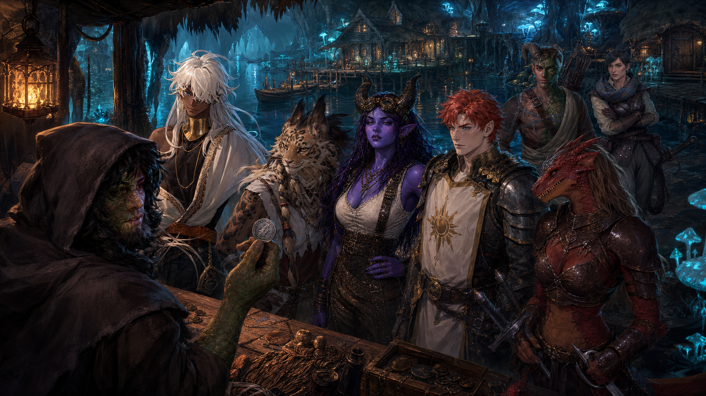
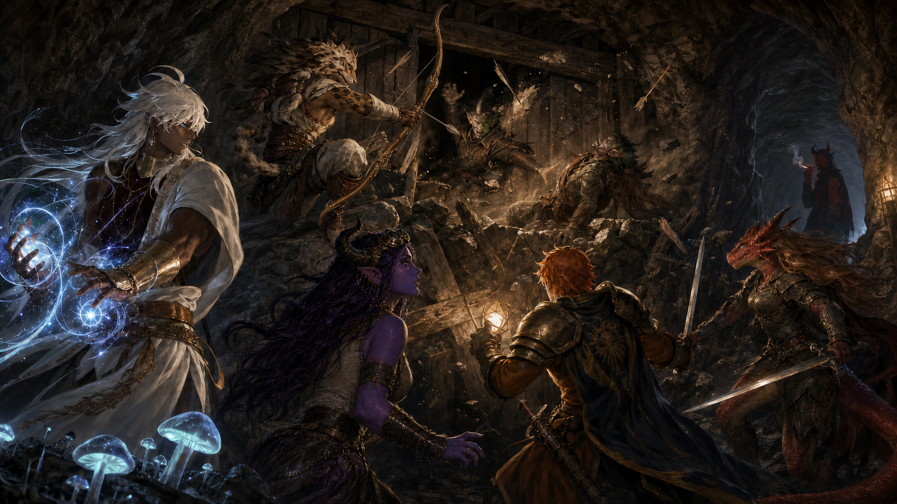
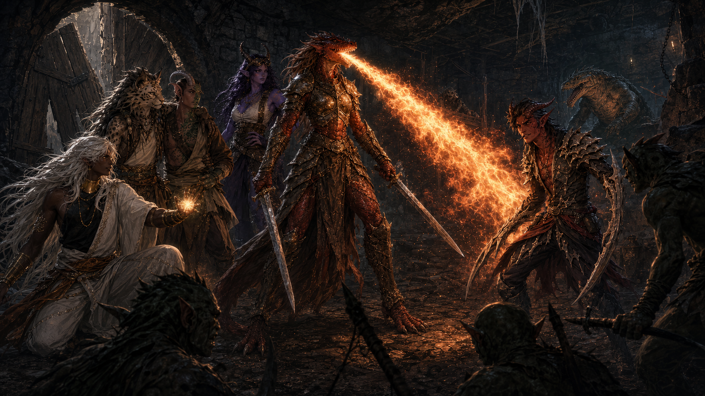

Sessione 005 — Il Diavolo d’Ossa
“Sentite, facciamo così. Mi sembrate delle persone a modo, anche se siete un po’ strani. Io sono qui per lavoro. A me non frega un cazzo di morire per questa causa. Voi quanto offrite?”
Cosa è successo
Situazione iniziale
La mattina del 17 Agosto 4713, il gruppo si sveglia a Neatholm. È sempre buio — sono sottoterra — ma piccole fessure nel soffitto lasciano filtrare un minimo di luce. Gli ibridati offrono colazione: radici, carne secca di origine non specificata. Il gruppo distribuisce il bottino della sessione precedente: 25 monete d’oro a testa dai cadaveri dei cultisti, le chain shirt perfette, e i glaive. Agira prende una chain shirt (la sua sotto-classe gli dà competenza nelle armature medie). Vengono identificate le pergamene: una è un trucchetto clericale inutilizzabile dal gruppo, un’altra resta sconosciuta, e quella trovata nelle sessioni precedenti si rivela essere una Pergamena di Cura Ferite, che viene data a Tamar.
Shopping da Brynn
Il gruppo visita l’emporio di Brynn, il mercante di Neatholm — in realtà una bancarella tenuta da un ibridato timido e rannicchiato nel suo mantello. Mostrano la spilletta con le ametiste ricevuta da Sull e ottengono uno sconto. Caslek tenta di rivendere le armi dei cultisti gonfiando i prezzi, ma fallisce miseramente — Brynn si accorge dei graffi e delle ammaccature. Metà del valore, come di consueto.
Caslek compra le Alchemist’s Supplies. Tamar compra un Healer’s Kit, una lanterna, olio e torce. Agira compra farina e torce. Anevia compra una faretra da 20 frecce.
Brynn mostra al gruppo una Moneta della Piuma — un token di ghisa con l’icona di una piuma, che protegge dalle cadute. Costa 75 monete d’oro con lo sconto, troppo per le tasche del gruppo. Spark e Agira la riconoscono: ai bastioni di Kenabres la portavano i cavalieri con cavalcature volanti e le truppe sulle torri alte. Brynn dice che è stata forgiata dal saggio del villaggio — e indica una capanna sull’altra sponda del lago. Il gruppo chiede a Brynn di tenerla da parte.

Il Veggente di Neatholm
Lann stava appunto attraversando il lago in barca per visitare il saggio e chiedere la sua benedizione prima della spedizione. Il gruppo si divide: Spark, Agira e Lann attraversano il lago; gli altri restano al molo.
Nella capanna trovano un ibridato anziano, con un aspetto per lo più umanoide tranne le gambe — una di capra, l’altra di canide. I suoi occhi sono vitrei e bianchi: è cieco, ma sembra vedere perfettamente. Si chiama semplicemente “il Saggio” e un tempo era un alchimista. Detiene le conoscenze degli antenati degli ibridati e un giorno sceglierà un erede.
Il saggio prepara un tè e legge le foglie:
Per Agira: “Vedo una donna con una testa di toro e un cuore malvagio. È protetta da un diavolo fatto d’ossa. La donna non accetterà diplomazia. Il diavolo… è incerto.”
Per Spark: “Vedo un labirinto fatto di roccia dove ti attende un miasma mefitico, terribile. Ma il miasma porta all’uscita.”
Spark chiede al saggio come abbia forgiato la moneta della piuma. La risposta è frustrante: con la magia, un’arte che si sta affievolendo con l’età. Spark, che sperava in un procedimento meccanico, resta delusa.
Anevia e la colpa
Mentre gli altri sono dal veggente, Anevia raggiunge il resto del gruppo al molo. La sua gamba sta migliorando — si appoggia ancora alla stampella, ma cammina meglio. Racconta di quando era al fianco del prelato quando gli hanno tranciato la testa — l’attacco non è stato solo a sorpresa, è stato preciso e premeditato. Qualcuno deve aver tradito.
Anevia rivela il suo segreto: era stata mandata in missione per scoprire i traditori. Si è infiltrata nelle magioni di cavalieri e nobili di Kenabres. Uno dei nomi emersi: Staunton Vhane, un comandante crociato caduto, un mercenario che li ha traditi. Ma era un pesce piccolo — il marcio era molto più profondo di quanto immaginasse. “Ho fallito nel mio lavoro.”
Caslek la consola: forse non è una questione di abilità — la superficie ha semplicemente ignorato troppo a lungo ciò che stava accadendo sotto i propri piedi. Anevia annuisce e promette di mantenere la mente lucida.
Le spore morte
Il gruppo torna alla caverna del Basidirond morto, sperando di raccogliere le spore allucinogene per usarle contro gli ibridati traditori. Tamar, che ha competenza da erborista, esamina la pianta: le spore sono troppo vecchie e il fumo del falò usato per bruciare i cadaveri le ha rese inerti. Niente arma segreta — dovranno contare sulle proprie forze.
L’avvicinamento al villaggio ostile
Lann guida il gruppo verso sud. Dopo circa mezz’ora di cammino, la caverna si stringe in un passaggio largo un metro e mezzo, le pareti incise da picconi. Si sentono voci in lontananza. Lann è visibilmente teso — non si era mai spinto così avanti.
Il piano: Caslek, Anevia e Lann vanno in avanscoperta. Anevia, nonostante la stampella, è impressionante — sparisce e ricompare come un’ombra. Caslek è meno discreto: gli scivola la zampa su una roccia e fa cadere dei sassi, ma una distrazione provvidenziale salva la situazione — un tiefling rosso esce dal tunnel per fumare un sigaro e litiga con le guardie ibridate, che lo ignorano completamente.
Le guardie sono due ibridati armati di mazza, pugnale e artigli naturali, postati dietro barricate di rocce e assi di legno. Un tunnel si apre alle loro spalle, coperto da un’asse di legno come porta. Nessuna luce — gli ibridati vedono perfettamente al buio.
Il combattimento alle barricate
Caslek si arrampica oltre le barricate e blocca la porta con dei piton. Ma Agira viene avvistato dalle guardie, che urlano e imbracciano le armi. Scoppia la mischia. Le due guardie cadono rapidamente. Dall’interno si sente il ruggito di una creatura — una grossa lucertola. Lann rivela di essere un monaco — spada corta, calci e punti ki.

L’incontro con Uziel
Il tiefling rientra e lancia Darkness, avvolgendo la zona nell’oscurità. Poi, sorprendentemente, inizia a parlare. Si presenta come Uziel, un mercenario. “Sono i vostri ospiti? Buongiorno, non siete stati invitati.” Poi, pragmatico: “Io sono pacifico. Questi qua vogliono spudellarvi. Voi quanto offrite?”
Il gruppo negozia: 250 monete d’oro (da mettere sul conto di Horgus) in cambio dei suoi servizi. Uziel accetta senza esitazione. L’oscurità si dissolve e il gruppo lo vede per la prima volta nella sua vera forma: la pelle rossa è coperta da piastre d’ossa che lo rivestono come un’armatura, e dagli avambracci spuntano lame lunghe come spade. Agira ha un lampo di riconoscimento: il diavolo d’ossa della profezia.
Uziel fornisce informazioni preziose:
- Il capo è Hosilla, un’inquisitrice di Baphomet. Ha ucciso i precedenti capi ibridati e li ha sacrificati.
- Ha due guardie personali.
- Dentro ci sono sei ibridati in totale.
- C’è una grossa lucertola nella dispensa.
- La stanza di Hosilla è in basso; la superficie è in alto.
- Uziel era pagato 100 monete d’oro per proteggerla in silenzio.
Tamar è sospettoso — non si fida di un mercenario che cambia padrone per soldi. Uziel se ne frega: “Beh, voi mi avete pagato un extra più extra.” Caslek lo prende sotto la sua ala, e i due sembrano andare d’accordo. Uziel si inchina teatralmente a Tamar: “Al vostro servizio.”

Il gruppo discute se uccidere o stordire gli ibridati. Agira e Caslek preferirebbero non uccidere — Tamar è più pragmatico. Alla fine la linea è: dare una seconda possibilità a chi la vuole, ma proteggere il gruppo prima di tutto.
Come è finita
Uziel calcia la porta del dormitorio e inizia il secondo scontro. Vlamyra usa il soffio di drago per illuminare la grotta. La lucertola gigante esce dalla dispensa. Da una stanza a sud arriva una freccia che colpisce Vlamyra al fianco per dieci danni — qualcuno là sotto li sta aspettando.
La sessione si chiude a metà combattimento.
La prospettiva del gruppo
Una sessione divisa nettamente in due metà: la prima, sociale e preparatoria, ha dato al gruppo il tempo di esplorare Neatholm, incontrare il misterioso veggente e prepararsi per lo scontro. La seconda metà ha portato il caos — un approccio furtivo fallito, un combattimento rapido alle barricate, e poi l’incontro più sorprendente della campagna finora: un mercenario tiefling ricoperto d’ossa che cambia bandiera per il miglior offerente. La profezia del veggente si è avverata con una rapidità inquietante — la donna con la testa di toro è Hosilla, e il diavolo d’ossa incerto è Uziel, che ha scelto il gruppo.
Decisioni prese
- Non comprare la Moneta della Piuma (troppo costosa per ora).
- Provare a raccogliere le spore del Basidirond (fallito — troppo vecchie).
- Dividere il gruppo per visitare il veggente.
- Tentare un approccio furtivo al villaggio ostile (parzialmente fallito).
- Negoziare con Uziel invece di combatterlo — 250 monete d’oro per i suoi servizi.
- Tentare di stordire gli ibridati quando possibile, non uccidere a vista.
Cosa abbiamo scoperto
- Il veggente di Neatholm è un ex alchimista cieco con poteri di divinazione — legge le foglie del tè.
- Profezia per Agira: una donna con testa di toro (Hosilla), protetta da un diavolo d’ossa incerto (Uziel).
- Profezia per Spark: un labirinto di roccia con un miasma che porta all’uscita.
- Anevia era una spia — infiltrata tra i nobili di Kenabres per scoprire traditori.
- Staunton Vhane: comandante crociato che ha tradito Kenabres.
- Hosilla: inquisitrice di Baphomet, ha preso il controllo del villaggio ostile uccidendo e sacrificando i vecchi capi.
- Uziel: mercenario tiefling con armatura d’ossa e lame incorporare nelle braccia; fa tre attacchi per turno.
- Lann è un monaco (spada corta + calci + punti ki).
- La Scaglia di Drago Argento ora concede anche Divine Favor (5 utilizzi al giorno, azione innata).
PNG incontrati
| PNG | Prima volta? | Impressione |
|---|---|---|
| Brynn | Sì | Mercante timido, onesto, sconto con la spilletta di Sull |
| Il Saggio di Neatholm | Sì | Veggente cieco, ex alchimista, inquietante e gentile |
| Uziel | Sì | Mercenario tiefling, cinico ma affidabile — se paghi |
| Lann | No | Guida, si rivela essere un monaco; teso all’avvicinarsi del villaggio ostile |
| Anevia Tirabade | No | Gamba in miglioramento; rivela di essere stata una spia; senso di colpa per aver fallito |
| Horgus Gwerm | No | Menzionato — il gruppo conta di fargli pagare Uziel |
Luoghi visitati
- Neatholm — emporio di Brynn, capanna del veggente
- Caverne Sotterranee di Kenabres — caverna del Basidirond (spore morte)
- Villaggio degli Ibridati Traditori — barricate, tunnel d’ingresso, dormitorio
Missioni e agganci
| Missione | Stato | Note |
|---|---|---|
| Distruggere il Villaggio Ostile | Aggiornata | Assalto in corso — due guardie eliminate, Uziel reclutato, combattimento nel dormitorio |
| Risalire in Superficie | Attiva | La via verso l’alto passa dal villaggio ostile |
| Scorta di Horgus Gwerm | Attiva | Ancora in corso — e ora gli devono 250gp |
Bottino e ricompense
| Oggetto | Chi ce l’ha | Note |
|---|---|---|
| Alchemist’s Supplies | Caslek | Comprate da Brynn |
| Healer’s Kit | Tamar | Comprato da Brynn |
| Pergamena di Cura Ferite | Tamar | Identificata da sessioni precedenti |
| Torce, lanterna, olio | Gruppo | Comprate da Brynn |
| 20 frecce | Anevia | Comprate da Brynn |
Indizi e domande aperte
- Chi è Staunton Vhane e qual è il suo ruolo nel tradimento di Kenabres?
- La profezia di Spark — quale labirinto di roccia? Quale miasma porta all’uscita?
- Hosilla ha documenti o piani nella sua stanza?
- La lucertola gigante — quanto è pericolosa?
- Chi ha tirato la freccia a Vlamyra dalla stanza a sud?
- La Moneta della Piuma è ancora da Brynn — torneremo a comprarla?
- Uziel manterrà la parola o tradirà il gruppo al momento sbagliato?
- Anevia menziona che Horgus è “completamente innocente” — davvero?
Prossima sessione
- Completare il combattimento nel villaggio ostile
- Scendere fino alla stanza di Hosilla
- Affrontare Hosilla e le sue guardie
- Cercare documenti o informazioni nella stanza di Hosilla
- Aprire il percorso verso la superficie
Riassunto per la sessione successiva
Leggere qui prima di iniziare la prossima sessione.
Dove siamo
All’interno del Villaggio degli Ibridati Traditori, nel dormitorio appena oltre le barricate d’ingresso. Siamo nel mezzo di un combattimento.
Con chi siamo
Il gruppo completo: Agira, Spark, Caslek, Tamar, Vlamyra, Kaylin. Con noi: Lann, Anevia, e il mercenario Uziel. Gli altri PNG (Horgus, Aravashnial) sono rimasti a Neatholm.
Cosa dobbiamo fare
Sopravvivere allo scontro in corso. Una lucertola gigante è uscita dalla dispensa. Ibridati si preparano a combattere. Una freccia è arrivata da una stanza a sud — probabilmente le guardie di Hosilla o Hosilla stessa. Dopo aver sgombrato il dormitorio, scendere fino alla stanza di Hosilla e neutralizzarla.
Tensioni aperte
- Vlamyra è stata colpita da una freccia (10 danni) — l’arciere è nascosto a sud.
- La lucertola gigante è libera e ha puntato Kaylin.
- Uziel è un alleato pagato, non un amico — Tamar non si fida, Lann tiene d’occhio.
- Il gruppo è diviso su uccidere vs. stordire gli ibridati.
- La profezia dice che Hosilla non accetterà diplomazia.
Non dimenticare
- Uziel fa tre attacchi per turno e ha fatto un critico al primo round — è forte.
- La Scaglia di Drago Argento ora dà anche Divine Favor (5/giorno).
- Tamar ha curato Vlamyra (da confermare).
- Le pozioni rosse e azzurre di Sull sono ancora disponibili.
- Horgus deve 250gp al gruppo per Uziel — se mai lo scoprirà.
- Moneta della Piuma tenuta da parte da Brynn (75gp).